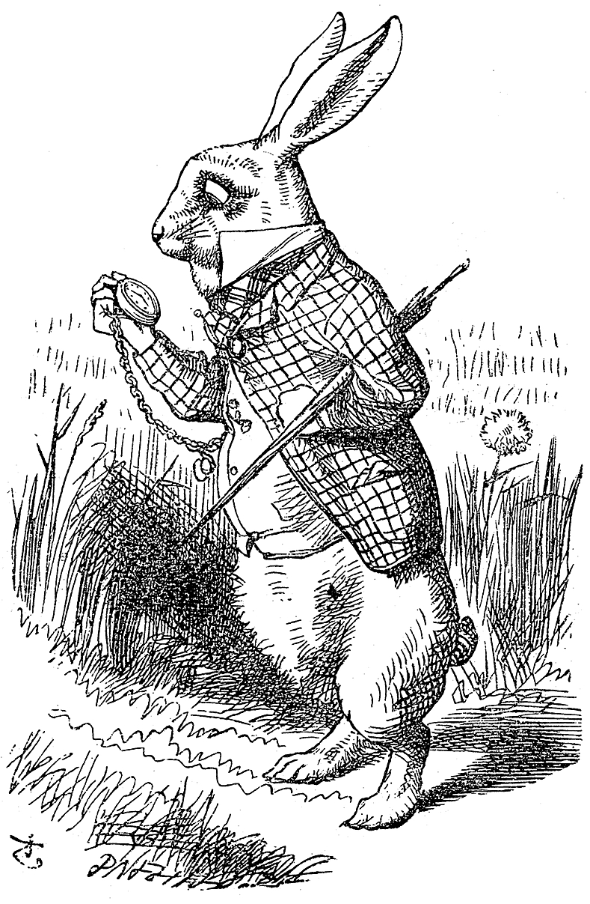
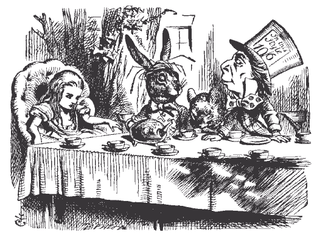
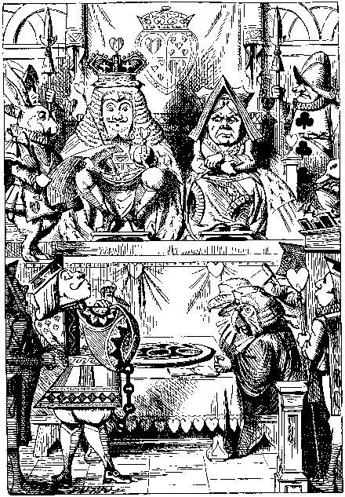

Choose a sequence, then read the images from beginning to end.
Into Wonderland
Alice follows the White Rabbit, gets caught up in a strange tea party, and finally faces the Queen. Curiosity leads her into danger.
01 / BEGINNING

02 / MIDDLE

03 / END

Is the White Rabbit leading Alice toward trouble or helping her leave it behind? Reverse the order and decide. These are two imagined interpretations of the images.